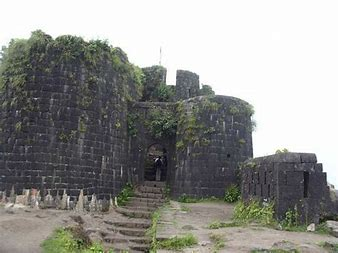

Purandar Fort
Purandar Fort, located near Pune in Maharashtra, India, is a historically significant fort known for its strategic importance and strong fortifications. Here are some key details about Purandar Fort:
History
- Built By: Purandar Fort was built during the Yadava dynasty in the 11th century and later fortified by the Bahmani Sultanate in the 14th century.
- Significance: The fort played a crucial role in the defense of the region and was later captured by Chhatrapati Shivaji Maharaj in 1646.
Architecture
- Design: Purandar Fort is known for its twin forts, Purandar and Vajragad (or Rudramal), and is characterized by its massive walls and bastions.
- Notable Structures: Key attractions within the fort include the Purandeshwar Temple, a Ganesh temple, and several water cisterns.
Location
- Coordinates: 18.2491° N, 73.9878° E
- Elevation: The fort is situated at an elevation of about 1,370 meters (4,490 feet) above sea level, offering panoramic views of the Sahyadri mountain range.
- Nearby Attractions: Purandar Fort is located near Saswad and is a popular destination for trekkers and history enthusiasts. The twin forts of Purandar and Vajragad offer scenic views and historical insights.
Trekking
- Difficulty Level: The trek to Purandar Fort is moderate, with well-marked trails leading to the summit.
- Duration: It typically takes about 2-3 hours to reach the top from the base village.
- Best Time to Visit: The best time to visit Purandar Fort is during the post-monsoon and winter seasons (October to February) when the weather is pleasant.
Points of Interest
- Panoramic Views: Visitors can enjoy breathtaking views of the Pune cityscape and the surrounding countryside from the fort's vantage points.
- Historic Structures: The fort boasts ancient temples, reservoirs, and remnants of military fortifications that reflect its rich historical heritage.
Purandar Fort is not only a testament to the military prowess of Shivaji Maharaj but also a picturesque destination offering insights into Maharashtra's rich cultural and historical legacy.